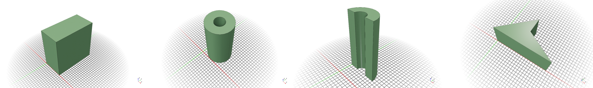
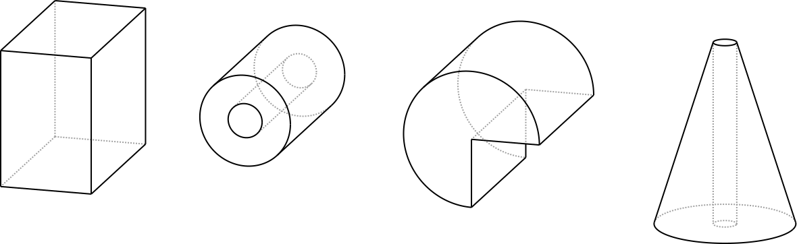
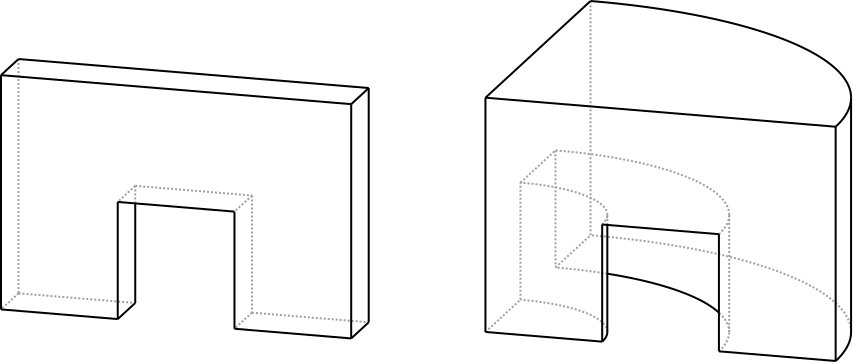

Bloky #

{kind=link}

Základnými blokmi stavebnice sú jednoduché tvary ako hranoly, valce, tyče. Používajú ako základ pre konštrukciu zložených dielov alebo ako dištančné prvky. Pomocou logických operácií (zjednotenie, prienik, rozdiel) môžeme z nich vytvátať komplikovanejšie objekty. Neobsahujú montážne otvory, tie je možné doplniť pomocou triedy Hole z knižnice.
Knižnica #
Knižnica základných komponentov s rozmermi zadávanými v BU jednotkách. Parameter center určuje, či komponent bude umiestnený v strede súradnicovej sústavy, čo je výhodné pri konštrukcii osovo symetrických dielov.
BU_Cube([x,y,z], center) # kocka / hranol
BU_Cylinder(diameter, height, angle, hole, center) # valec
BU_PolyLine([ [x1,y1], [x2,y2], ...], height) # mnohouholník, extrudovaný
BU_PolyRot([ [x1,y1], [x2,y2], ...], angle) # mnohouholník, rotovaný
BU_Cone(diam1, diam2, height, angle, center) # kužel
BU_Sphere(diameter, angle1, angle2, center) # gula [ToDo]
Parametre Default Popis
--------------------------------------------------------------
x,y,z 1,1,1 rozmery
height 1/4 výška
length 1 dĺžka
diameter 1 priemer
hole True radiálny montážny otvor
angle 360 uhol v stupňoch
[xn,yn] súradnica bodu
center True poloha v strede súradnicovej sústavy
Základné bloky
Funkcie pre tvorbu základných blokov sú založené na zjednodušenom rozhraní k objektom z knižnice CadQuery. V prípade potreby konštrukcie komplikovanejších objektov na základe špeciálnych požiadaviek, napríklad skosené alebo zaoblené hrany, môžeme použiť priamo objekty a metódy knižnice CadQuery.
Značenie dielov #
base_t_p1_p2_p3_ ... p1 ... pn počet parametrov
závisí od typu komponentu
t - typ komponentu pn - parameter, v BU jednotkách alebo uhle v stupnoch (ppp)
B - cube 01 = 1 BU
C - cylinder ...
P - polyline 10 = 10 BU
R - polyrot 12 = 1/2 BU
Q - sphere 14 = 1/4 BU
N - cone 34 = 3/4 BU
X - user defined ...
Príklady použitia #
from lib import *
b1 = BU_Cube([1, 1.5, 2])
b2 = BU_Cylinder(1,2, hole=True, center=False)
b3 = BU_Cylinder(1.5,2, hole=False, center=False, angle=270)
b4 = BU_Cone(0.25, 1.5, 2 )
{kind=link}

Obr. 49 Jednoduché bloky.#
from lib import *
q = [ [0,0], [1,0], [1,1], [2,1], [2,0], [3,0], [3,2], [0,2], [0,0]]
b1 = BU_PolyLine(q, 1/2)
b2 = BU_PolyRot(q, 90)
{kind=link}

Obr. 50 Extrudované a rotované bloky.#